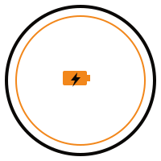

About & FAQ
What Are These Modules?
We sell three kinds of salvaged battery modules: A123 12S8P modules (96 cylindrical 26650 LiFePO4 cells, 12 groups of 8 in parallel connected in series) pulled from Toronto Transit Commission bus packs; Nissan Leaf modules (2S2P, laminated pouch LMO/NMC cells) pulled from Leaf EV packs; and Chevy Volt modules (3 cells in series, NMC prismatic pouch cells) pulled from Gen 1 Volt EV packs. Each listing's spec table states exactly which type you're looking at.
Why A123 Cells?
A123 Systems pioneered "Nanophosphate" lithium iron phosphate (LiFePO4) cells — a chemistry built for thermal stability and long cycle life rather than squeezing in maximum energy density. That trade-off is exactly why these cells show up in demanding commercial and industrial applications (transit buses, grid storage, power tools) instead of just consumer electronics, and why they're a long-standing favorite in the DIY solar and off-grid community. Lithium Werks later acquired A123's cell technology and continued making the same ANR26650M1B cell under their own name — you'll see both brandings on our modules depending on manufacture date, but it's the same cell.
Why These Sources?
Transit bus and EV battery packs get retired for reasons that have nothing to do with individual cell health — route changes, vehicle write-offs, fleet and model upgrades. That means a lot of the modules coming out of these packs still have plenty of usable life left, which makes them a strong source of cells for secondary, stationary use like home solar storage, even though they're no longer suitable for the demanding duty cycle of a vehicle.
That's especially true for our TTC-sourced packs. Toronto's hybrid bus fleet used BAE Systems HybriDrive propulsion — the same system these A123 packs came from — and that hybrid drivetrain had well-documented reliability problems that led many buses to be retired or converted back to diesel well before the battery packs wore out. We can't put an exact cycle count on a module we haven't tested, but it's a big part of why the modules we do test hold up so well: the ones we've measured typically come in at 18–19Ah against a 20Ah original rating.

How We Test & Grade
Every module goes through the same process: visual inspection for physical damage, a full voltage check, a controlled capacity discharge test, and a balance check across its series groups. Modules that pass are listed as Tested & Graded. Modules we haven't run through the full process yet are listed as As-Is Salvage — visually inspected only, priced lower to reflect the added risk and work that falls on the buyer.
Safety Notes
LiFePO4 is one of the most thermally stable lithium chemistries available, which is part of why it's a good fit for DIY storage projects. That said, treat any used battery module with care: don't short the terminals, store modules in a cool, dry place, use a BMS appropriate for your series/parallel configuration, and don't mix Tested & Graded and As-Is modules in the same series string without testing the As-Is modules first.
Not all of our modules are the same chemistry, and that matters for how you handle and charge them. Our TTC A123 modules are LiFePO4. Our Nissan Leaf and Chevy Volt modules are NMC/LMO pouch cells — energy-dense and well-proven in EVs, but less thermally tolerant and less forgiving of overcharge than LiFePO4. Don't charge them with LiFePO4 voltage settings, don't mix chemistries in the same series string, and match your BMS/charger to the specific chemistry of what you're building with.
The full assembled pack is a different animal from a single module — it's a ~640V string. If you're buying the complete pack, treat it like the high-voltage equipment it is: insulated tools only, no work on a pack in an unknown state without proper PPE, and if you're not already comfortable working around automotive/industrial high voltage, have someone who is handle the teardown or setup.
Shipping & Pickup
Local pickup is available in York Region, Ontario, by appointment. Shipping is arranged case-by-case for modules — reach out before ordering to confirm shipping options and cost for your location.
Returns & Disputes
For Tested & Graded modules: contact us within 7 days of pickup or delivery if a module doesn't meet its stated specs, and we'll work it out case by case. As-Is Salvage items are sold as-is with no returns, which is reflected in their price.